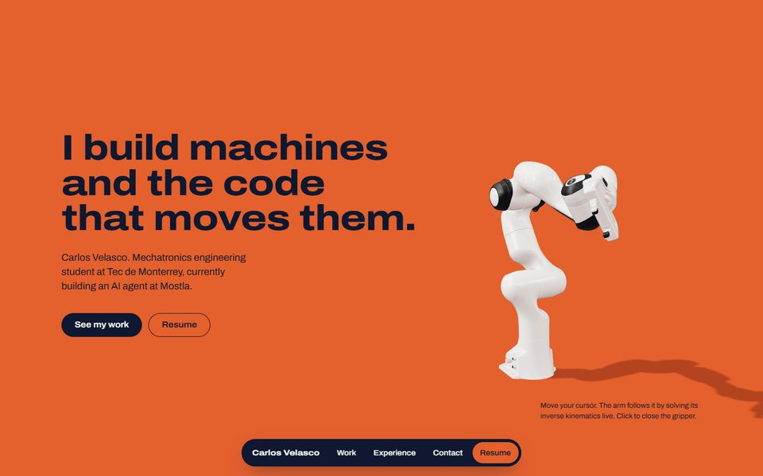
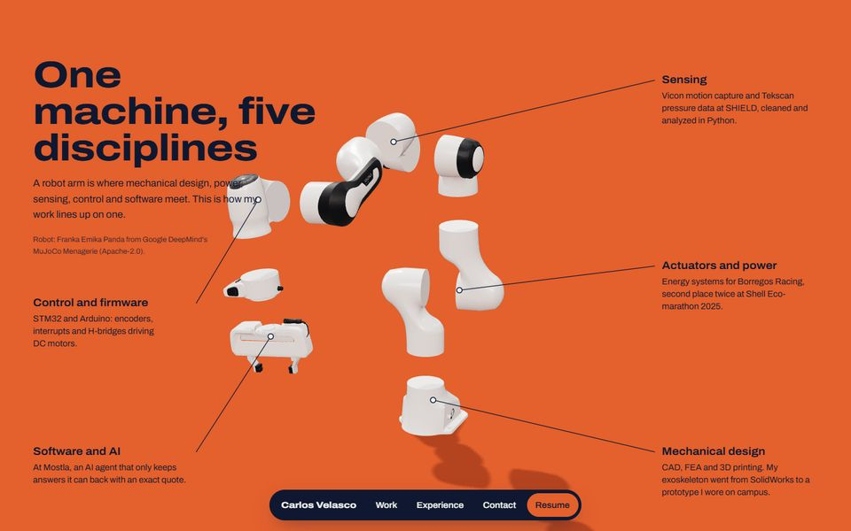
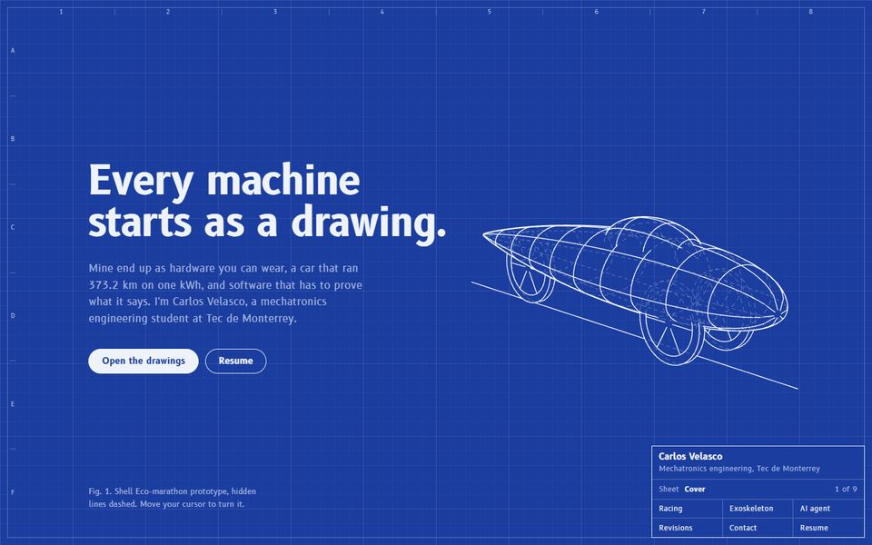
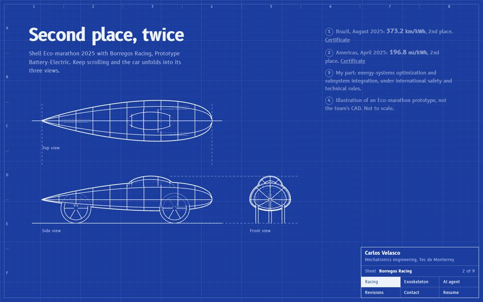

A. Taller
Un brazo robótico real (Franka Panda) sobre fondo naranja industrial. Sigue tu cursor con cinemática inversa en vivo, y al hacer scroll se desarma pieza por pieza: cada parte es una disciplina tuya.
Abrir opción ADos direcciones nuevas con 3D y la versión actual como base. Ábrelas en computadora con las animaciones de Windows activadas para ver el movimiento completo.


Un brazo robótico real (Franka Panda) sobre fondo naranja industrial. Sigue tu cursor con cinemática inversa en vivo, y al hacer scroll se desarma pieza por pieza: cada parte es una disciplina tuya.
Abrir opción A

Todo el sitio es un plano técnico azul. El carro de Shell Eco-marathon se dibuja solo, con aristas ocultas punteadas, y se proyecta en sus tres vistas. La experiencia es una tabla de revisiones y los proyectos, una lista de partes.
Abrir opción BLa versión limpia de ayer, sin 3D. Sirve para comparar.
Abrir versión actual